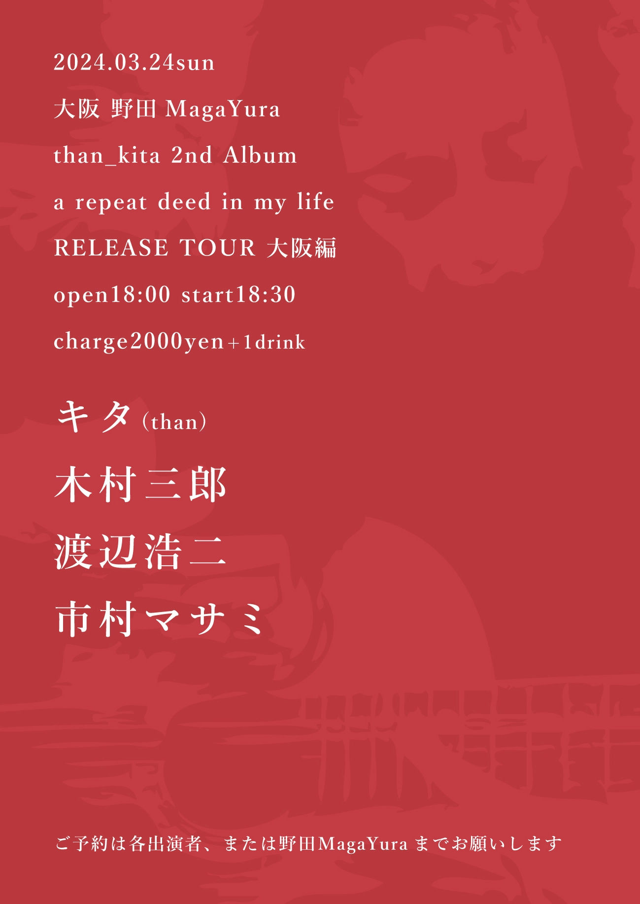
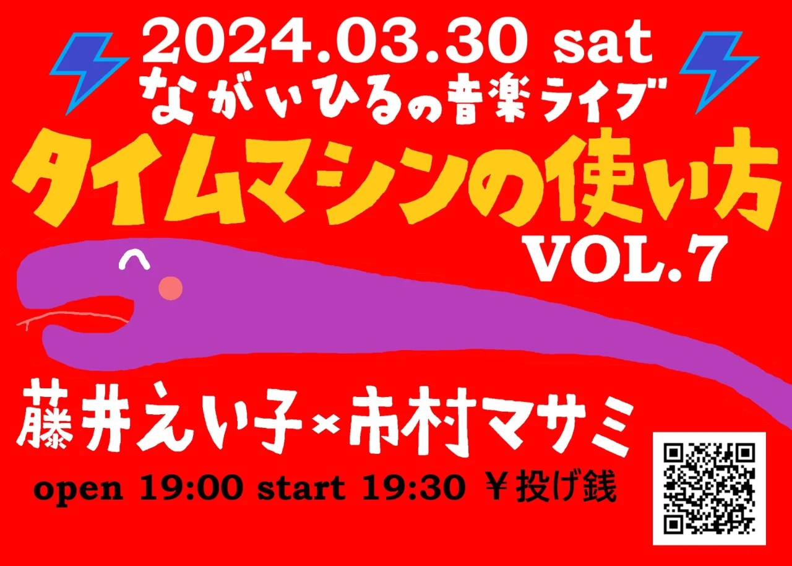

ライブの予定
大阪市阿倍野区昭和町２丁目１−２６ 新栄プロパティー昭和町 10階(地図)
電話:09036195479
【than_kita 2nd Album [a repeat deed in my life]RELEASE TOUR 大阪編】
- 出演
- シャク｜新世界ホシヲ｜市村マサミ
- 開場
- 19:00
- 開演
- 20:00
- 料金
- 2500円＋1ドリンク代
全曲全員カヴァーだけのライブです。
ツイキャスから投げ銭配信有。
京都府長岡京市開田４丁目 ２１番３号(地図)
電話:0758742900
【than_kita 2nd Album [a repeat deed in my life]RELEASE TOUR 大阪編】
- 出演(順)
- 市村マサミ｜sazanami｜モカリン｜takacho
- 開場
- 18:00
- 開演
- 18:30
- 料金
- 2000円＋1ドリンク代
大阪市福島区吉野３丁目７−7 2･3F 富岡ビル 2/3F(地図)
電話:06-6180-4191
【than_kita 2nd Album [a repeat deed in my life]RELEASE TOUR 大阪編】
- 出演
- キタ(than)｜木村三郎｜渡辺浩二｜市村マサミ
- 開場
- 18:00
- 開演
- 18:30
- 料金
- 2000円＋1ドリンク代

Thanのキタさんのソロアルバムリリースツアーの大阪編に呼んでいただきました！光栄至極でございます。
他の出演者の方も素晴らしく、興奮必須です。
大阪府堺市堺区戎島町５丁３(地図)
電話:0722564326
岡山市北区大学町3-9 小林ビル2F(地図)
電話:090-7502-3774
【than_kita 2nd Album [a repeat deed in my life]RELEASE TOUR 大阪編】
- 出演
- 藤井えい子｜市村マサミ
- 開場
- 19:00
- 開演
- 19:30
- 料金
- 投げ銭

京都府京都市右京区西院東今田町２０ シャピタン六角(地図)
電話:0759258121
- 出演
- 少年タイチ（茨城）｜SiMoN（広島）｜市村マサミ｜木村三郎｜奥村由希
- 開場
- 18:30
- 開演
- 19:00
- 当日
- 1900円＋1ドリンク代
- 前売
- 2400円＋1ドリンク代
兵庫県尼崎市神田南通り2丁目42(地図)
電話:08038498187
大阪市西成区太子1-4-5(地図)
電話:080-7247-0707
和歌山県西牟婁郡上富田町南紀の台５−３９(地図)
電話:0739-20-6507